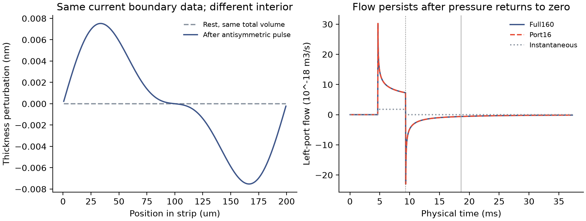
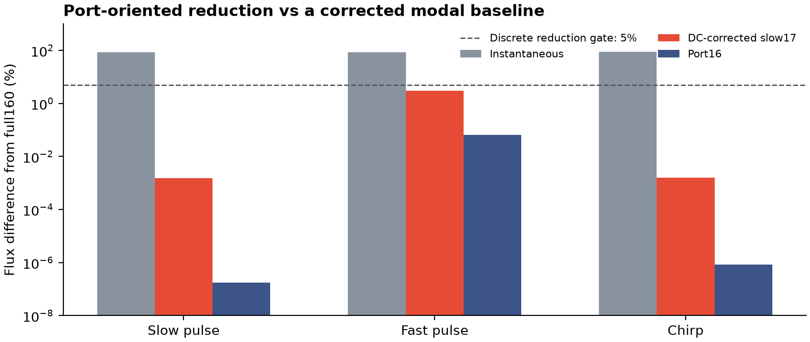
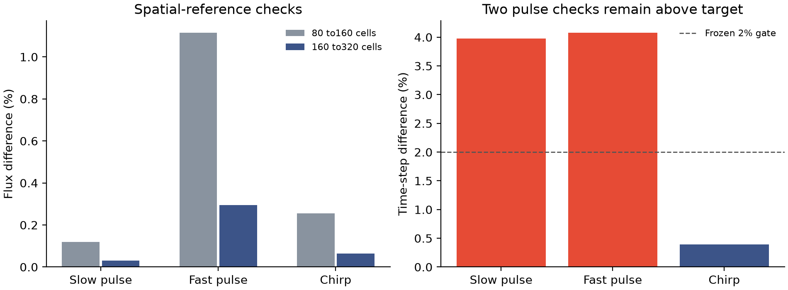

保留边缘状态，
检验交换通量。
Stateful Edge Exchange：从文献中的动态弯月面、界面弛豫与保持耗散的降阶方法出发，检验局部边缘何时可以缩减为便宜的整体边界处理。本页是一次有明确边界的数值架构试验。
一个可检验的问题
当前压差、端点厚度和总液量相同时，边缘内部状态是否仍会改变通量？对称条带先接受反对称压力脉冲，再撤去驱动。此时它与静止条带的当前边界数据及总液量相同，但内部形状不同，仍有回流；在预先规定的观测时刻，回流约为脉冲峰值的2.01%。这说明该离散条带的交换通量不能由这些当前标量唯一决定，并不证明真实皂膜的吸附记忆。

如何保留它
以压力为输入、液体通量为输出，用物理能量与迁移率组装两端口局部模型。投影基保留精确液量方向，记录储能、接口功、物理耗散和后向欧拉的数值损失。压差与通量在整体膜一侧反号，因此将来可用同一接口核对功和液量；本次尚未接入整体运动膜。
保持被动性的降阶已有文献基础，不能作为首创。此处采用固定有理响应方向；17状态上限只产生16个独立方向，按实际维数报告，没有补入数值零方向。9状态方案在快速脉冲中仍不够准确。
与更强的标准基线比较
补充了含静态端口响应的校正低频模态基线，避免仅与表现欠佳的普通低模态比较。该标准17状态方案也通过5%离散通量门槛，最大差异为3.006%；端口16状态方案为0.0684%。这支持端口输出作为构造目标，但不构成通用降阶算法的创新声明。

| 边界模型 | 通过5%门槛 | 最大通量差异 | 最大累计端口输运差异 |
|---|---|---|---|
| Instantaneous boundary | 0/18 | 90.54% | 89.16% |
| DC-corrected slow5 | 0/18 | 343.8% | 33.98% |
| DC-corrected slow9 | 12/18 | 56.99% | 0.9063% |
| DC-corrected slow17 | 18/18 | 3.006% | 0.01556% |
| Port5 | 0/18 | 237.6% | 17.27% |
| Port9 | 12/18 | 8.207% | 0.5587% |
| Port16 (cap17) | 18/18 | 0.06834% | 0.0008471% |
精度、成本与限制

160→320单元的最大通量差异为0.295%。脉冲时间步减半差异约4%，扫频为0.391%；因此0.069%是对同时间离散参照的降阶误差，不能当作连续物理误差。36组保存剖面另行重算毛细能、体积、边界通量和耗散，全部通过。
在线脚本中位耗时：完整160状态约0.047秒，端口16状态约0.016秒；离线矩阵与基底构造另记，不能由此声称完整模拟加速3倍。均匀条带在不同长度与厚度下按毛细时间缩放，尚未检验非均匀夹缩、非线性或跨几何学习泛化。
创新应落在哪里
- 先测试非均匀、非线性局部边缘响应，保留标准静态校正对照；不再用几何尺度变换充当独立验证。
- 接入整体膜的液量／表活与接口功，比较固定储库、即时边界和带状态边界。
- 用公开弯月面通量与完整条纹轨迹做外部约束，不以排液指数训练或挑选物性。
文献与复现入口
7篇公开PDF已保存在本地文献目录；公开网页仅列原始来源，不重新托管论文。原始构造失败和日志均保留，成功矩阵没有覆盖旧结果。
- Lalli & Giusti2024 · Thin-film marginal regeneration
- Vigna-Brummer et al.2025 · Flowing menisci
- Vigna-Brummer et al.2026 · Quantified exchange flux
- Grassia2022 · Surfactant transport and relaxation
- Cantat et al.2026 · Capillary-drainage review
- Gugercin et al.2012 · Passive model reduction
- Monier et al.2024 · Fringe dynamics
- Steinberg et al.2016 · Moving-mesh consistency
未做神经网络训练；局部降阶基由物理离散算子直接构造。无拟合交换系数或吸附速率。全部计算为秒级任务，没有启动超过2小时的训练。